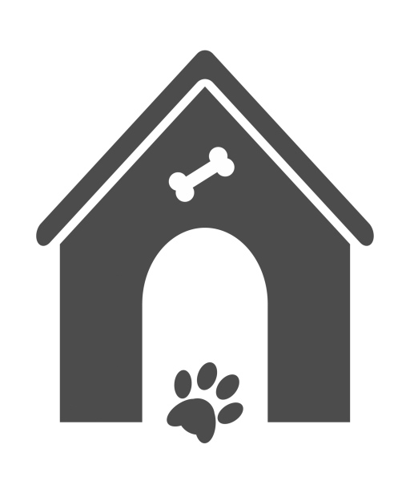

Se fundó hacia 1603 con familias otomíes y de diversas lenguas. Perteneció a la orden de los agustinos hasta 1758. La iglesia se construyó en 1708 y se terminó en 1775; es de estilo barroco salomónico en la fachada y en la puerta y el interior de estilo neoclásico.
Regresar al inicio: